Your cooler's screen,
without iCUE.
GIFs, pictures, clocks, live PC stats, now playing and weather on the round screen of the CORSAIR NAUTILUS RS LCD. One small app with no drivers and no services, that never touches your controllers or anything else plugged in.
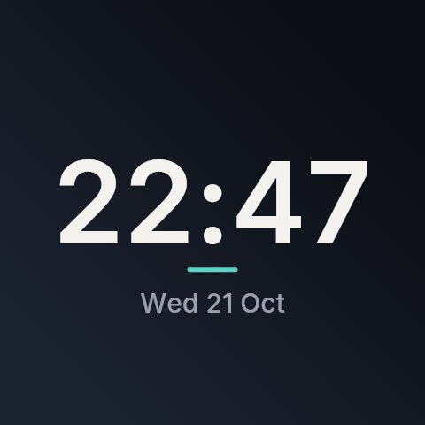
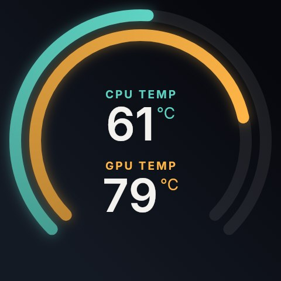
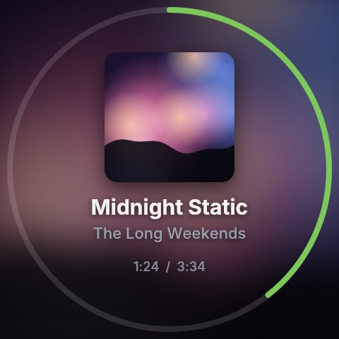
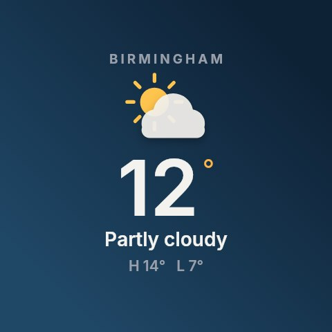
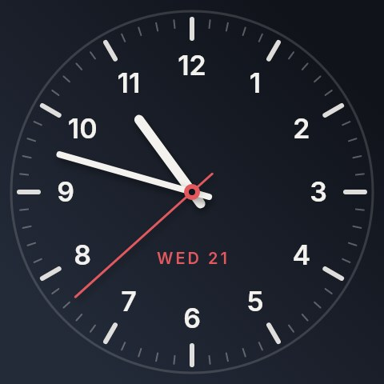
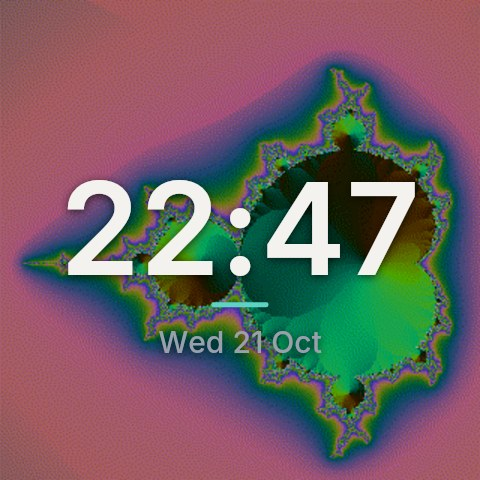
Why Cooler Screen
The one job iCUE was
needed for. Nothing else.
The NAUTILUS RS LCD's fans and pump run from your motherboard. Only the screen needed iCUE, and iCUE brings a lot with it. On some PCs it gets in the way of other USB devices, like a DualShock 4 running through DS4Windows.
Leaves your controller alone
It looks for the cooler's screen by its USB ID and opens nothing else. DS4Windows, ViGEm, HidHide and Steam Input carry on as normal.
No drivers, no services
Uses Windows' own built-in USB support, opened shared. Nothing to install in the background, and no admin rights.
Fans keep doing their thing
Fans and pump stay on your motherboard's PWM headers and BIOS curves, whether Cooler Screen is running or not.
Screens
Make it yours.
Start from one of 16 ready-made screens, or build your own: any background with anything on top. These are drawn by the app itself.
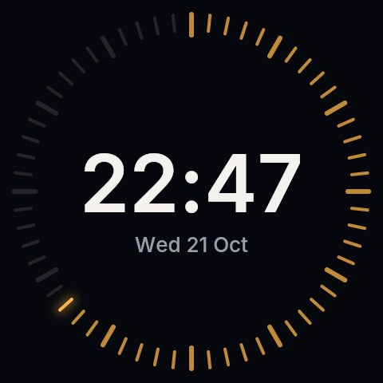
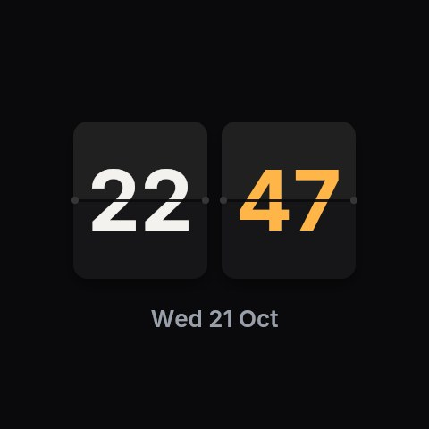
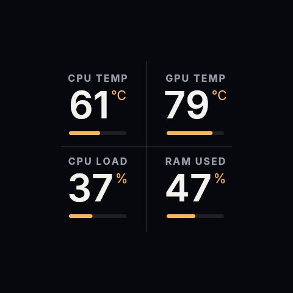
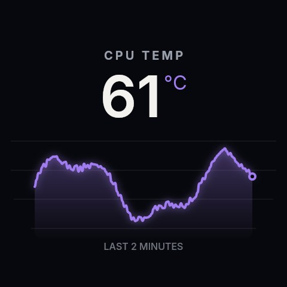
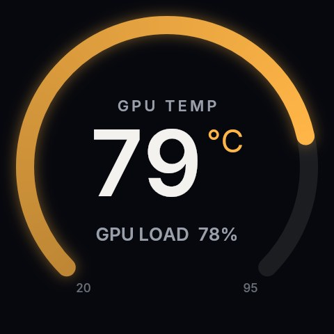
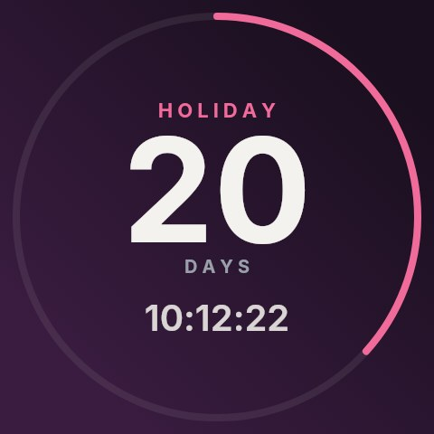
Tour
Simple to drive.
Real screenshots of the app.
Home
A live round preview of exactly what's on the cooler, and why it's showing.
- Click any screen to put it up
- Pause hands the screen back to the cooler
- Brightness, connection and temperatures at a glance
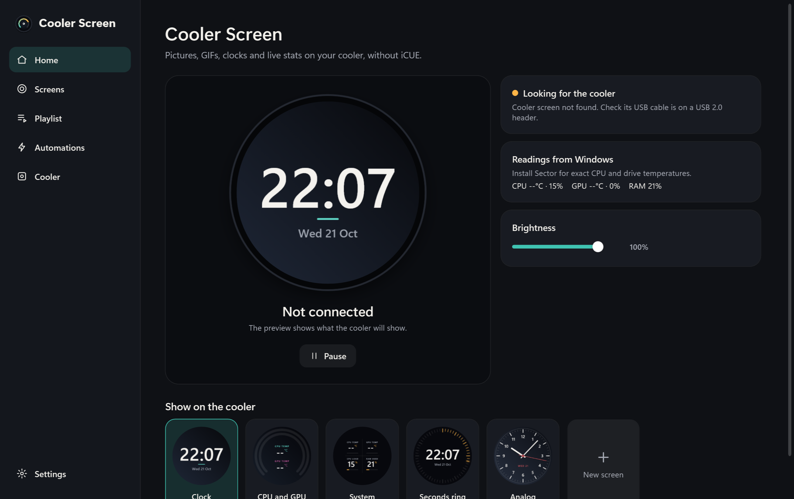
Editor
Change anything and the preview, and the cooler, follow as you go. Saved automatically.
- Colour, gradient, picture, GIF or slideshow behind
- Clock, stats, message, countdown, music or weather on top
- Any font, colours, size and position
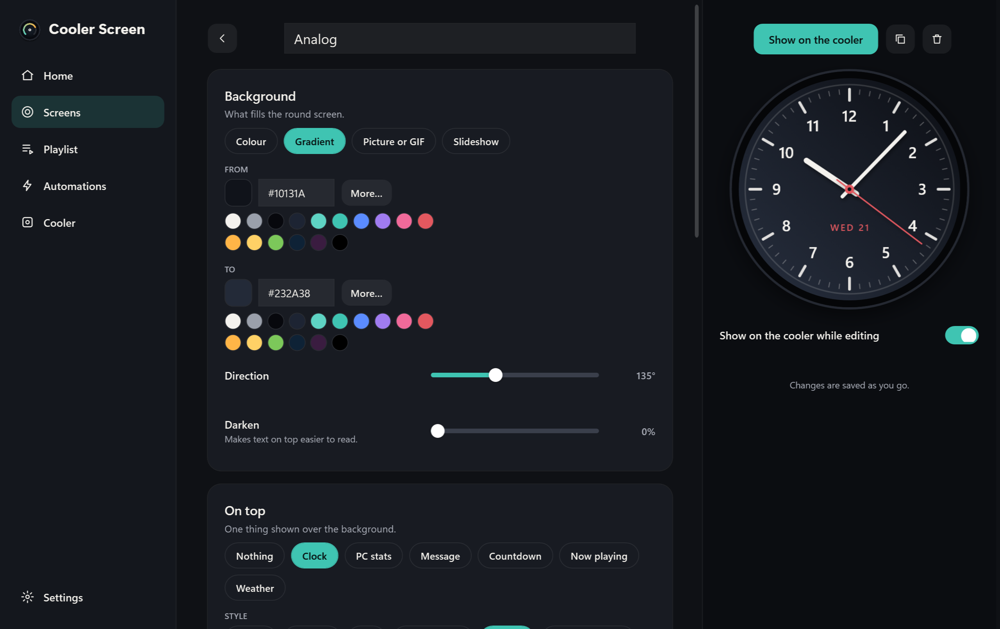
Screens
Everything your cooler can show, in one place.
- 16 ready-made starting points
- Duplicate, import and export
- Pictures travel inside exported files
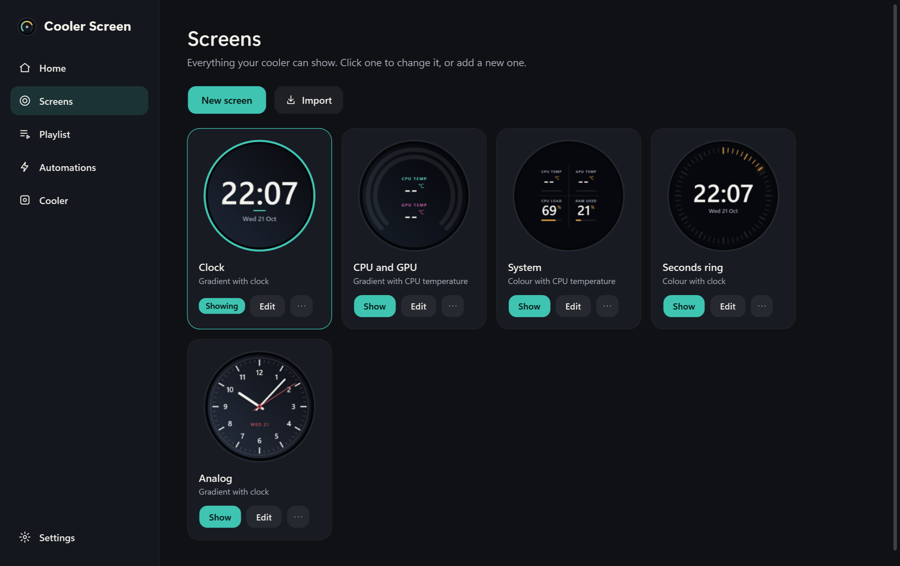
Automations
Let the screen change itself when something happens.
- A pulsing red alert when things get too hot
- A screen of your choice while a game is running
- Dim or off at night, or when the PC is locked
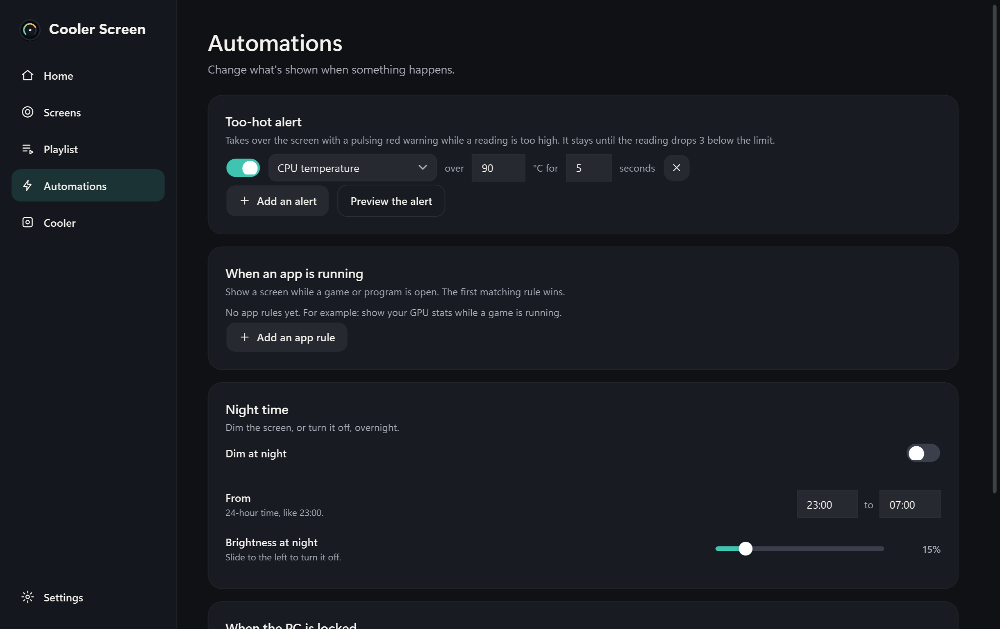
Cooler
The screen itself: connection details, brightness, rotation and smoothness.
- Reconnects after unplugging and sleep
- Test pattern and one-click details for support
- Warns if iCUE is also driving the screen
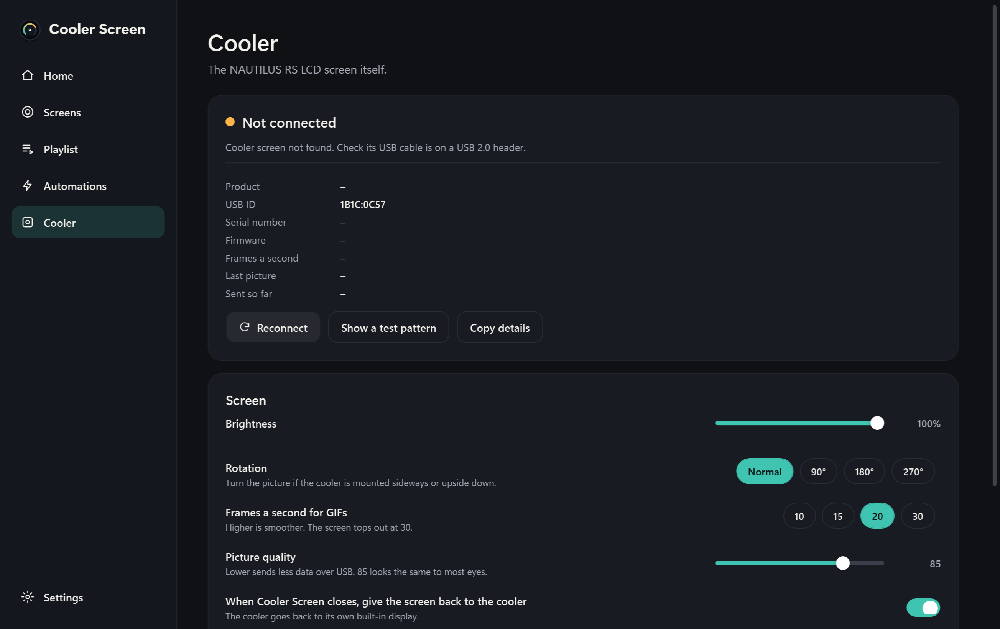
Everything inside
More than a picture.
Pictures, GIFs and slideshows
Any picture or animated GIF or WebP, filled to the circle. Zoom and move it, change the GIF's speed, darken it so text on top reads well, or play a whole folder with crossfades.
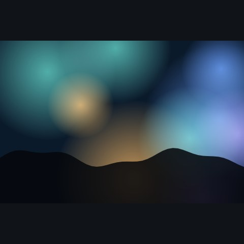
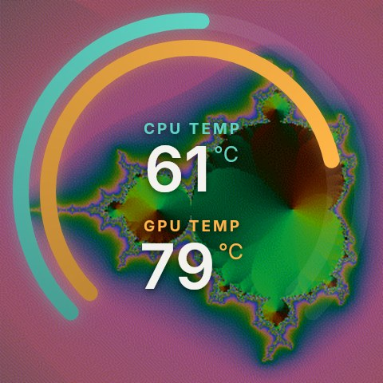
Seven clocks
Digital, Stacked, Flip, Seconds ring, Analog, Analog minimal and Two time zones.
PC stats
Gauges, rings, a grid, a big number, bars and a graph, turning amber and red as things heat up.
Now playing, weather and more
The song in Spotify or your browser with its artwork, your town's weather, a countdown to a date, or your own message, still or scrolling.
Playlist
Rotate through screens, in order or shuffled.
Automations
Too-hot alerts, a screen per game, night dimming and lock screen.
Exact temperatures
Borrows hardware readings from Sector if it's installed, so no driver is needed here.
Plays nicely
It touches one device.
Before opening anything, Cooler Screen checks the USB ID. Only the cooler's screen matches, so everything else on your PC is never even opened.
- Matches
1B1C:0C57(or0C55) and nothing else - Opened shared, so nothing is locked out
- Windows' own HID support: no drivers, no services, no admin
- Gives the screen back to the cooler when it closes
Install
Up in a minute.
Needs Windows 10 (2004 or later) or Windows 11, 64-bit, and the cooler's USB cable on a USB 2.0 header.
- Download Cooler ScreenCoolerScreen-Setup.exe from the latest release. A standalone CoolerScreen.exe is there too.
- Run itNo admin rights needed. It installs for you only and starts with Windows if you like.
- Pick a screenA clock goes up straight away. Choose another on Home, or make your own.
If iCUE is installed, uninstall it or turn off its LCD control, so the two don't fight over the screen. Windows may also say "Windows protected your PC" because the app isn't code-signed: click More info, then Run anyway.
Which coolers does it work with?
The CORSAIR NAUTILUS 240 RS LCD and NAUTILUS 360 RS LCD, and NAUTILUS RS or RS ARGB coolers fitted with the NAUTILUS RS LCD screen module. They show up in Windows as USB 1B1C:0C57 (some as 0C55).
Does it control the fans or pump?
No. On these coolers the fans and pump plug into your motherboard's PWM headers and follow your BIOS fan curves. That keeps working exactly as before.
Why are CPU temperatures approximate without Sector?
Windows doesn't let ordinary apps read the CPU's own temperature sensor; that needs a kernel driver. Cooler Screen deliberately doesn't install one. If Sector is installed, it uses Sector's exact readings. Otherwise it uses the motherboard's thermal zone where there is one, plus loads, memory, network and NVIDIA GPU sensors.
What happens when I close it?
By default the screen goes back to the cooler's own built-in display. You can turn that off on the Cooler page to keep the last picture up instead.
Does it use much CPU?
Clocks and stats redraw once a second. GIFs redraw at the frame rate you choose (20 a second by default). Each frame is a small JPEG of around 30 to 60 KB.
Is it from Corsair?
No. Cooler Screen is an independent, free app. CORSAIR, NAUTILUS and iCUE are Corsair's trademarks.
Make your cooler yours.
Free, small, and gone from your way once it's set up.